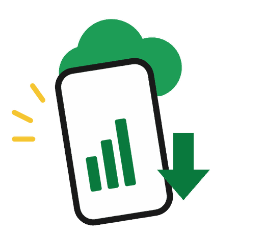
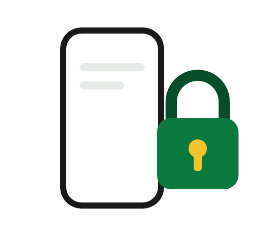

Faz os teus dados durarem mais.
O DataSaver MZ é um aplicativo para Android que corta o que gasta dados sem tu pedires: anúncios, rastreadores e vídeos que começam sozinhos. Feito em Moçambique, para quem compra pacotes pequenos e quer que durem.
Descarregar para AndroidO descarregamento começou. Quando terminar, abre o ficheiro nas Transferências para instalar. Não começou? Toca aqui.
Para Android 8 ou mais recente. Os primeiros dois dias são grátis.
O que mudou nesta versão

O pacote acaba antes do fim do mês
Compras um pacote, usas o telemóvel como sempre, e em poucos dias o saldo desaparece. Uma parte desse consumo não foi escolha tua.
Cada página que abres carrega anúncios. Muitos sites e aplicações enviam, em segundo plano, informação sobre o que fazes para empresas de publicidade. E há vídeos que começam a tocar sozinhos. Tudo isso passa pela tua internet, e és tu que pagas.
Quem tem pacotes pequenos sente isto mais. Cada megabyte conta.
O que o aplicativo faz
Corta anúncios e rastreadores
Reconhece os endereços de publicidade e de rastreamento e não deixa o telemóvel ligar-se a eles. Funciona nos sites e nas aplicações, não só no navegador.
Modo Economia Extrema
Bloqueia vídeos de serviços conhecidos, como o YouTube, a Netflix e os vídeos do Facebook. É para os dias em que precisas mesmo de poupar. Alguns vídeos deixam de funcionar, e desligas quando quiseres.
Mostra para onde vão os dados
Vês quanto gastaste hoje e nos últimos sete dias, e que aplicações gastam mais.
Só nos dados móveis
No Wi-Fi o aplicativo faz uma pausa e volta sozinho quando regressas aos dados móveis.
Sem cadastro
Não crias conta. Instalas, aceitas as permissões e a poupança liga-se.
Pagas só o tempo que precisas
De seis horas a um mês, no próprio aplicativo.
Quanto poupas depende do que usas. Quem navega em muitos sites com anúncios poupa mais do que quem só usa o WhatsApp. O aplicativo mostra uma estimativa, não uma medição exacta.
O teu tráfego fica no teu telemóvel
O aplicativo usa uma ligação VPN criada no próprio aparelho, só para filtrar os endereços de anúncios. O que escreves, vês e envias não passa pelos nossos servidores. O único contacto com o servidor é para validar a licença e os pagamentos.

Quanto custa
Os primeiros dois dias são grátis, sem pagares nada. Depois escolhes o tempo de que precisas e pagas dentro do aplicativo, por M-Pesa, e-Mola ou IZI.
- 6 horas10 MZN
- 24 horas15 MZN
- 1 semana80 MZN
- 1 mês300 MZN
Os preços podem mudar. Vale o que aparece no aplicativo na hora de pagar.
Como instalar
- Toca em Descarregar e espera o ficheiro acabar.
- Quando acabar, abre o ficheiro. Se o Android perguntar, permite instalar aplicações a partir do navegador que estás a usar.
- Abre o DataSaver MZ, passa pelos três ecrãs e aceita as permissões que ele pede. Cada uma é explicada na hora.
- Pronto. A poupança liga-se sozinha e o teste de dois dias começa.
O Android pode avisar que o ficheiro não vem da Play Store. É normal, porque o aplicativo ainda não está lá. Descarrega-o só desta página.
Perguntas frequentes
O aplicativo gasta muita bateria?
Pouca. Ele só trata dos pedidos de endereços, não analisa o resto do tráfego. A notificação fixa que vês é obrigatória no Android para manter a poupança activa.
Pede uma VPN. É seguro?
É uma VPN local, criada no teu telemóvel só para filtrar endereços de anúncios. Não envia o teu tráfego para nenhum servidor nosso. Podes ler tudo na Política de Privacidade.
Posso usar num iPhone?
Não. Por agora só funciona em Android 8 ou mais recente.
Um site ou aplicação deixou de funcionar. E agora?
Pode acontecer quando um endereço bloqueado era necessário. Desliga a optimização por um momento e avisa-nos. Podemos libertar esse endereço sem precisares de actualizar o aplicativo.
Como actualizo para uma versão nova?
Volta a esta página, descarrega a versão mais recente e instala por cima. Não perdes nada.